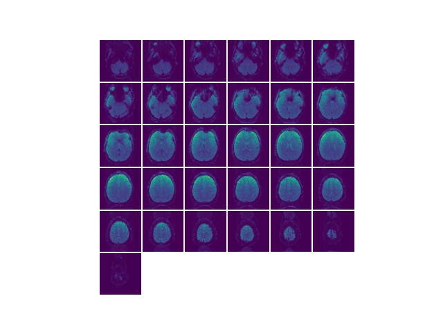
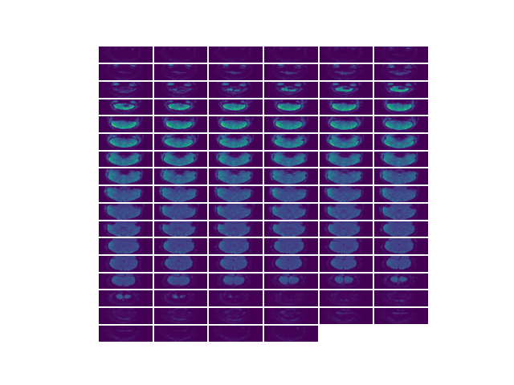
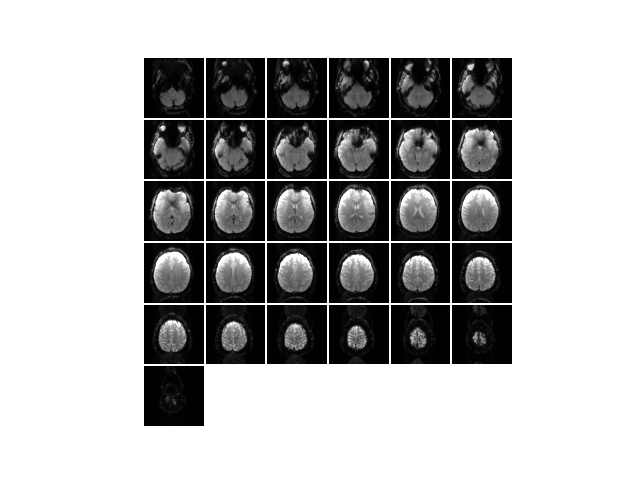

Note
Click here to download the full example code
Mosaic plot¶
The function mosaic plots all of the slices in a volume in a matplotlib figure. Good for quick visualization or testing of volumes.
- 
- 
- 
# sphinx_gallery_thumbnail_number = 3
import cortex
import matplotlib.pyplot as plt
# load reference functional image for test purposes
volume_arr = cortex.db.get_xfm('S1', 'fullhead').reference.get_data().T
# volume_arr is a (31,100,100) ndarray
# with no args mosaic slices this volume in the first dimension
plt.figure()
cortex.mosaic(volume_arr)
# slices along a different dimension can be plotted using the dim param
# here coronal
plt.figure()
cortex.mosaic(volume_arr, dim=1)
# kwargs are passed through to imshow
plt.figure()
cortex.mosaic(volume_arr, cmap=plt.cm.gray, vmin=0, vmax=1500)
# mosaic always returns the mosaic image along with info about its shape
# here show=False so we don't generate another plot
mosaic_arr, (nwide, ntall) = cortex.mosaic(volume_arr, show=False)
# mosaic_arr is 607 x 607, with nwide = 6, ntall = 6
Total running time of the script: ( 0 minutes 0.348 seconds)